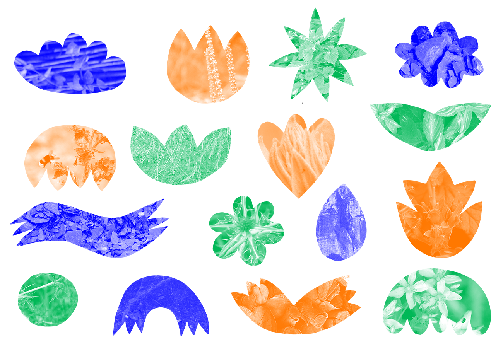
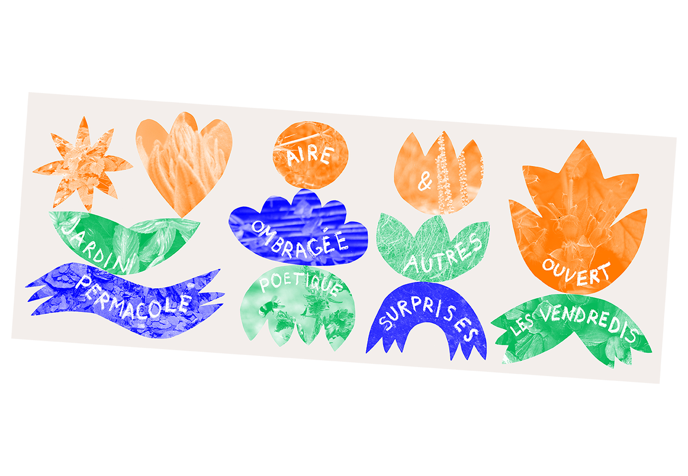
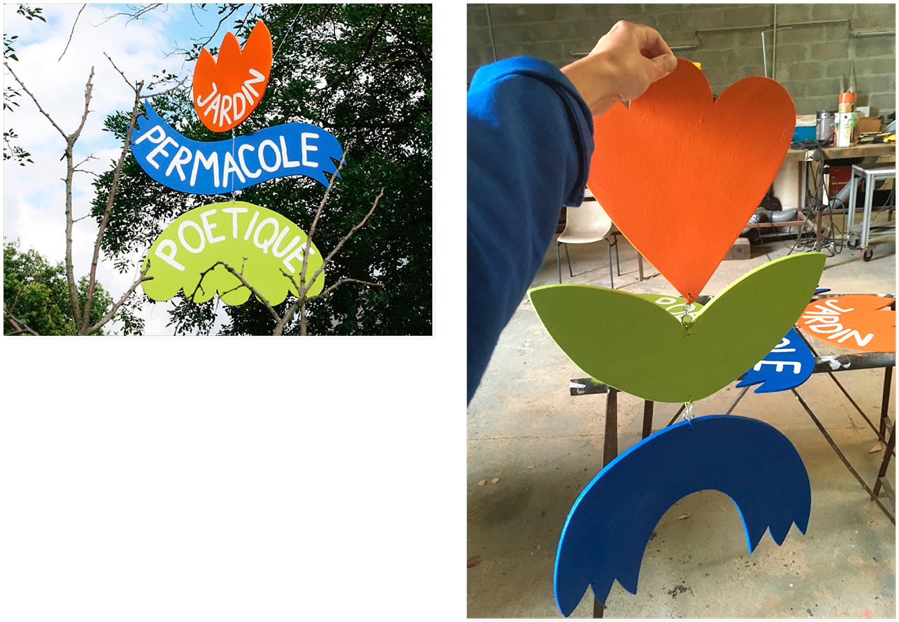
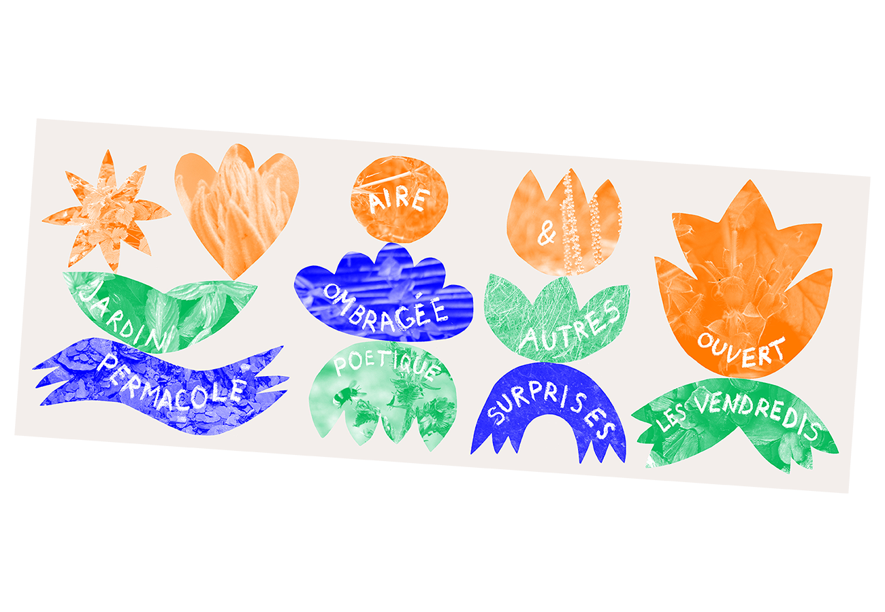
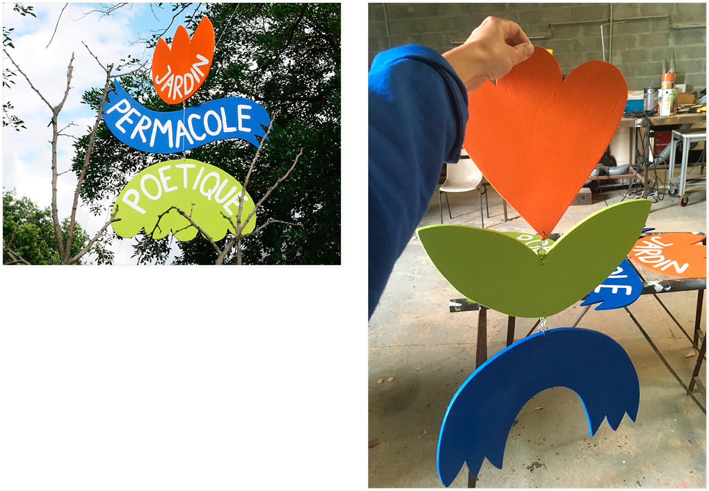
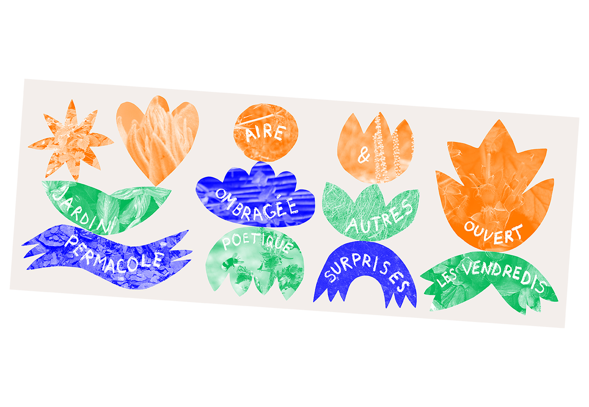
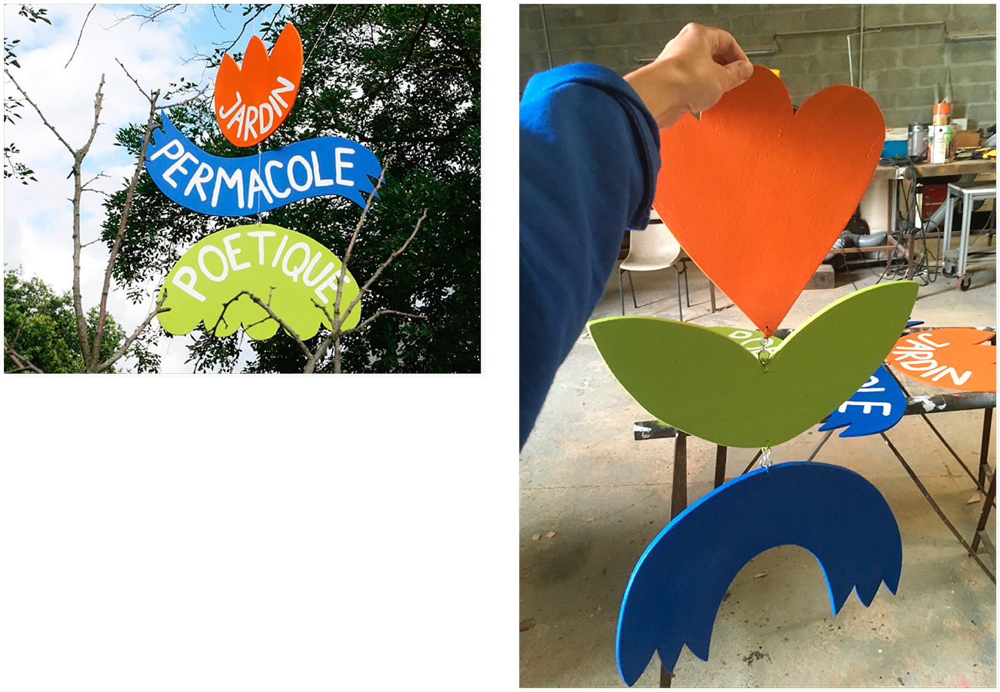

Jard'In Zur
Conception de supports de communication et signalétique pour le Jard'In Zur, un jardin permacole poétique à Angers.
Ce projet est porté par le groupe ZUR - Zone Utopique Reconstituée.
Les visuels ont été inspirés des guildes : associations verticales de plantes bénéfiques entres-elles, utilisées en permaculture.
Supports de communication et prototypes de signalétique réalisés en juin 2020.

 




